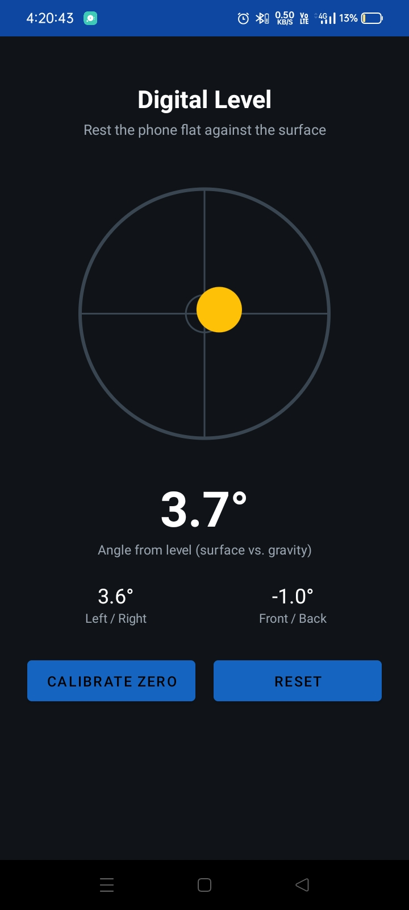
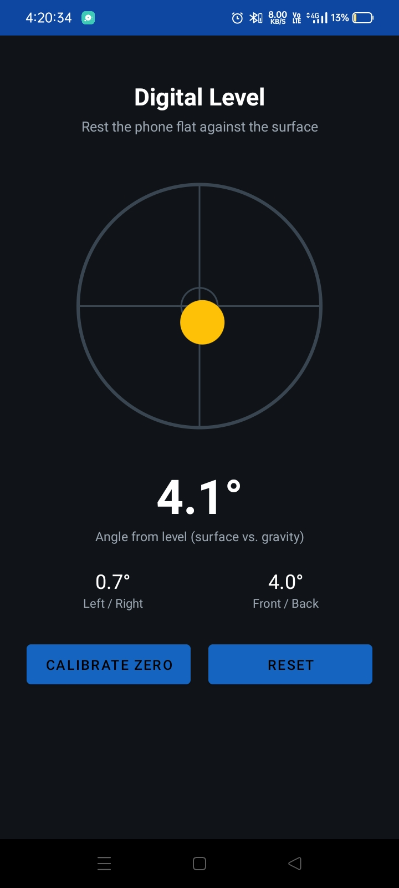

Smartphone Inclinometer & Digital Level
Introduction
As an engineer I can never have enough tools, and having tools available 24/7 is a daydream. One of the tools I frequently need is an inclinometer to measure the inclination angle of any surface.
So like a normal person I asked ChatGPT about the options available to me and learned that almost every modern smartphone has built-in IMUs including an accelerometer which can be used for inclinometers, so I headed to the Play Store.
Soon enough I was frustrated with the apps available on the Play Store: they all had lots of annoying, intrusive ads for a simple utility tool like an inclinometer. These ads irritated me, I had plenty of AI credits and time, so I built my own clean, ad-free app.
Technical Details & Approach
How It Works & Gravitational Reference Anchor:
Every smartphone has a built-in IMU unit (accelerometer, gyroscope, and magnetometer). I leveraged the built-in accelerometer for this project. At rest, the 3-axis accelerometer measures the reaction force to Earth's gravitational field, providing a 3D gravity vector g = (gx, gy, gz) in the phone's own local coordinate frame. This acceleration due to gravity serves as a stable, absolute anchor for measuring planar tilt.

screenshot 1

screenshot 2
Trigonometric Orientation & Dual-Axis Leveling:
The app measures the orientation of the smartphone relative to the gravity vector and calculates the pitch and roll angles:
- Overall Angle: The primary numeric readout in the middle calculates the overall angle between the phone's flat face and horizontal level via arccos(gz / |g|). 0.0° represents perfectly flat; 90.0° means standing on its edge.
- Two-Axis Pitch & Roll: Computes the left/right and front/back tilt components separately, so it behaves like a real two-axis spirit bubble level rather than just a single scalar.
- Digital Low-Pass Filtering: A software low-pass filter smooths incoming raw accelerometer samples, eliminating jitter and micro-tremors from hands or table vibrations.
- Zero Offset Calibration: Laying the phone on a surface and tapping “Calibrate zero” zeroes out the current position—especially handy for compensating for camera bumps or phone protective cases.
Note: Demo video will be uploaded on YouTube and linked here soon.